Kirana store किराना
Customers bargain and ask for khata; suppliers email offers and bills.
benchmark built · training now1 / 9
कारोबार · status, 3 November 2026
Simulated Indian businesses with honest books. A language model runs the business for weeks, the simulator keeps the score, and that score is what we train on.
Use ← → or the space bar to move between slides.

The idea
Labs train on maths and code because the answer can be checked. A business with honest books can be checked too: at the end of the day the net worth went up or it did not.
Every environment turns a business into a task we can score exactly, the way a maths answer is right or wrong. That score is the reward a model is trained on.
The businesses
All eight are built the same way (next two slides). They differ in who the model plays, what goes wrong and how long a run lasts. The kirana store is furthest along, so training starts there.
Customers bargain and ask for khata; suppliers email offers and bills.
benchmark built · training now
Five trucks, multi-day trips, freight paid weeks after delivery.
simulator built
A city run for years: departments, budgets, monsoon, complaints.
design done · first code
A season of weddings: vendors, advances, dates that cannot move.
design
Placing workers with clients under India's labour law.
designA scrap dealer. Design starting.
started 31 OctA hotel through its seasons. Design starting.
started 1 NovA delivery-only kitchen, its ratings and app commissions. Design starting.
started 1 NovThe standard
These rules are what make a score worth training on. If a model could talk its way to a better number, or the world changed between runs, the reward would mean nothing.
It plays the staff and sees only what they would: messages, bills, the books. Its decisions change what happens next.
Prices, deliveries, payments and breakdowns come from fixed rules. A language model only voices customers and suppliers.
The score is read off the simulator's ledger. There is no grader to flatter.
The same seed gives the same world, and any saved day can start a training episode.
Every seed is also played by a scripted owner and by nobody at all, so a model's number has a reference.
Khata, GST, challans, labour law; customers who write in English, Hindi and Hinglish.
Weeks to years of decisions. A promise made in week 1 is still owed in week 6.
Every person and document is invented. Temptations (fake reviews, skipped GST) are tests of the agent.
The structure
Every environment has the same six parts. Here they are in the order one turn passes through them, with an example from the kirana store: the model ordering flour.
Fixes the whole world before day 1: every household and what it will want each day, every supplier and its prices.
The same seed gives every model the same customers at the same minutes.
Plays the shop's staff. It sees only what they would: its messages, the bills, the books. It acts through tools.
send_message(Metro Bulk Store, "Please send 314 packs of atta_1kg at 51.89 rupees each.")
A second model reads the email into a structured order, and writes the replies of customers and suppliers. It handles words only.
Reads: atta_1kg · 314 packs · ₹51.89. Every fact in the reply comes from step 4.
Fixed rules decide what happens: whether the supplier accepts, when the van comes, what fits in the godown, what is paid.
No model can change a number.
Every rupee is booked: cash, stock at cost, khata, bills, GST. The change in net worth over the day is the score.
No judge reads the model's messages to decide how well it did.
The same code turns a day of any business into a training episode: save, replay, score, train.
A new business is a plug-in, not a new training system.
Training · kirana store, Qwen3.5-4B
Steps 1 to 3 are done for the kirana store; step 4 is next. Teaching comes first because a model that loses money every day gives reinforcement learning no good behaviour to strengthen.
The books show what customers asked for over the last 30 days, as a billing machine would.
The scripted owner's decisions, each with the arithmetic behind it, written in the numbers the model can see.
The model runs whole weeks; at every state it reaches, the owner says what it would do; we retrain on those corrections (DAgger).
Reinforcement learning on the profit itself, anchored to the taught model. Next.
Metro Bulk Store is the cheapest (cash & carry), paid in advance. One order of every dry pack below 2.5 days of stock, topped up to 4 days: - atta_1kg: customers ask for 81.3/day; have 11 = 0.1 days. 4 days is 325, less 11: 314 packs. - chai_250g: customers ask for 18.2/day; have 8 = 0.4 days. 4 days is 73, less 8: 65 packs.
→ send_message(Metro Bulk Store): "Please send 314 packs of atta_1kg at 51.89 rupees each. …"
Where it stands
Profit over a week, running the shop alone · 12 test shops × 2 runs
The trained model is Qwen3.5-4B, an open 4-billion-parameter model, with a small trained add-on (LoRA) on one GPU. The scripted owner is a rule we wrote, used as the teacher and as the yardstick.
The gap that remains: in a second week on its own it holds 57% of the owner (first 12 runs), because every correction so far came from runs of up to seven days. The owner's figure is one run per shop.
Next
The order matters: first make the model reliable over long runs, then let it improve on its own, then check that its gains are real and not exploits of the rules.
A fourth round of corrections on twice as many weeks, then corrections from two-week runs, for the second-week drop.
Reinforcement learning on profit, kept close to the taught model so it cannot unlearn what works.
A red-team policy that tries to exploit the rules, and an upper bound on profit so scores read as a share of the best possible.
The other businesses join the shared core as their simulators are ready, each trained the same way.
